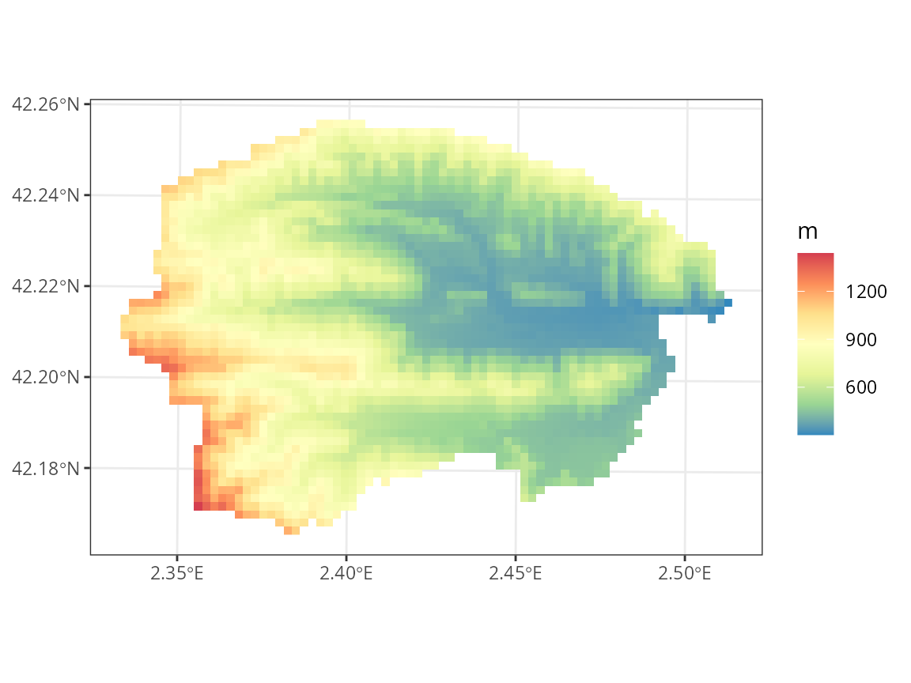
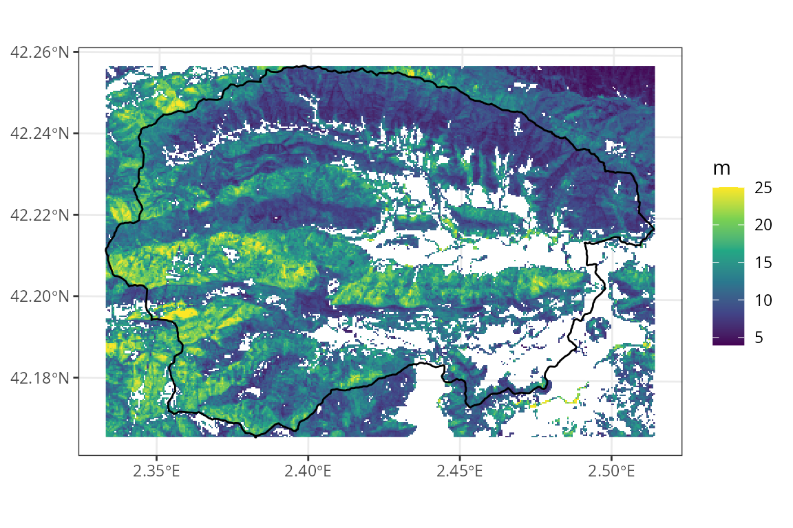

Preparing inputs II: arbitrary locations
Miquel De Cáceres / Núria Aquilué / Paula Martín / María González
2025-03-26
Source:vignettes/intro/PreparingInputs_II.Rmd
PreparingInputs_II.RmdAim
This vignette has been created to illustrate the creation of spatial inputs to be used in model simulations with the package, starting from a set of coordinates corresponding to arbitrary locations. The functions introduced in this document are meant to be executed sequentially to progressively add spatial information, as illustrated in the workflow below, but users are free to use them in the most convenient way.

Before reading this vignette, users should be familiar with forest and soil structures in package medfate. Moreover, a brief introduction to spatial structures used in medfateland package is given in vignette Package overview and examples are given in vignettes Spatially-uncoupled simulations and Watershed simulations.
Let’s first load necessary libraries:
Target area
Any spatial data set should begin with the definition of spatial elements. Here we will use a watershed in Catalonia as example, which we will describe using cells of 200 m in EPSG:32631 (UTM for fuse 31) projection.
First we load a polygon data set describing watersheds in Spain and select our target watershed (Riera de Bianya [river code “2005528”]):
dataset_path <- "~/OneDrive/EMF_datasets/"
scchh <- terra::vect(paste0(dataset_path, "Hydrography/Sources/Spain/CuencasMedNorte_Pfafs/M_cuencas_rios_Med_Norte.shp"))
watershed <-terra::project(scchh[scchh$pfafrio =="2005528",], "epsg:25831")
watershed## class : SpatVector
## geometry : polygons
## dimensions : 1, 8 (geometries, attributes)
## extent : 444922.8, 459850.8, 4668354, 4678487 (xmin, xmax, ymin, ymax)
## coord. ref. : ETRS89 / UTM zone 31N (EPSG:25831)
## names : OBJECTID COD_MAR cod_uni pfafrio nom_rio_1 Cuen_Tipo
## type : <int> <chr> <int> <chr> <chr> <chr>
## values : 63564 M 1001395 2005528 RIERA DE BIANYA NA
## Shape_Leng Shape_Area
## <num> <num>
## 4.905e+04 1.024e+08We can draw a map with the location of the watershed within Catalonia using:
dataset_path <- "~/OneDrive/EMF_datasets/"
counties <- terra::vect(paste0(dataset_path, "PoliticalBoundaries/Sources/Catalunya/Comarques/comarques.shp"))
ggplot()+
geom_spatvector(data = counties)+
geom_spatvector(fill = "black", data = watershed)+
theme_bw()Now we define a raster at 200 m resolution, including the target area. We intersect it with the watershed boundaries to keep the target locations:
res <- 200
r <-terra::rast(terra::ext(watershed), resolution = c(res,res), crs = "epsg:25831")
v <- terra::intersect(terra::as.points(r), watershed)And finally we transform the result into a sf
object:
x <- sf::st_as_sf(v)[,"geometry", drop = FALSE]
x## Simple feature collection with 2573 features and 0 fields
## Geometry type: POINT
## Dimension: XY
## Bounding box: xmin: 445022.4 ymin: 4668453 xmax: 459751.3 ymax: 4678387
## Projected CRS: ETRS89 / UTM zone 31N
## First 10 features:
## geometry
## 1 POINT (449799.3 4678387)
## 2 POINT (449998.3 4678387)
## 3 POINT (450197.4 4678387)
## 4 POINT (450396.4 4678387)
## 5 POINT (450595.5 4678387)
## 6 POINT (450794.5 4678387)
## 7 POINT (449401.2 4678189)
## 8 POINT (449600.3 4678189)
## 9 POINT (449799.3 4678189)
## 10 POINT (449998.3 4678189)We will use the raster definition for plots.
## used (Mb) gc trigger (Mb) max used (Mb)
## Ncells 2108966 112.7 4276820 228.5 2603706 139.1
## Vcells 3546505 27.1 10146329 77.5 10144745 77.4Topography and land cover type
Topography
Once an object sf has been defined with target
locations, we need to determine topographic features (elevation, slope,
aspect) and land cover corresponding to those locations. You should have
access to a Digital Elevation Model (DEM) at a desired resolution. Here
we will use a DEM raster for Catalonia at 30 m resolution, which we load
using package terra:
dem <- terra::rast(paste0(dataset_path,"Topography/Products/Catalunya/MET30m_ETRS89_UTM31_ICGC.tif"))
dem## class : SpatRaster
## dimensions : 9282, 9391, 1 (nrow, ncol, nlyr)
## resolution : 30, 30 (x, y)
## extent : 258097.5, 539827.5, 4485488, 4763948 (xmin, xmax, ymin, ymax)
## coord. ref. : ETRS89 / UTM zone 31N (EPSG:25831)
## source : MET30m_ETRS89_UTM31_ICGC.tif
## name : met15v20as0f0118Bmr1r050
## min value : -7.120
## max value : 3133.625Having a digital elevation model, we can use function
add_topography() to extract elevation and calculate aspect
and slope:
y_0 <- add_topography(x, dem = dem)## ℹ Checking inputs## ✔ Checking inputs [14ms]## ## ℹ Defining column 'id'## ✔ Defining column 'id' [11ms]## ## ℹ Extracting topography## ✔ Extracting topography [7.2s]##
y_0## Simple feature collection with 2573 features and 4 fields
## Geometry type: POINT
## Dimension: XY
## Bounding box: xmin: 445022.4 ymin: 4668453 xmax: 459751.3 ymax: 4678387
## Projected CRS: ETRS89 / UTM zone 31N
## # A tibble: 2,573 × 5
## geometry id elevation slope aspect
## <POINT [m]> <int> <dbl> <dbl> <dbl>
## 1 (449799.3 4678387) 1 900. 24.5 164.
## 2 (449998.3 4678387) 2 901. 27.5 155.
## 3 (450197.4 4678387) 3 880. 23.2 146.
## 4 (450396.4 4678387) 4 843. 27.9 201.
## 5 (450595.5 4678387) 5 878. 16.9 158.
## 6 (450794.5 4678387) 6 860. 22.4 188.
## 7 (449401.2 4678189) 7 995. 20.9 180.
## 8 (449600.3 4678189) 8 938. 30.8 107.
## 9 (449799.3 4678189) 9 838. 19.6 140.
## 10 (449998.3 4678189) 10 831. 27.3 101.
## # ℹ 2,563 more rowsWe can check that there are no missing values in topographic features using:
check_topography(y_0)## ✔ No missing values in topography.We can now examine the elevation of the area, using the raster
r to draw cells instead of points:
## Scale for fill is already present.
## Adding another scale for fill, which will replace the existing scale.
Land cover type
In addition to topography, users should have access to a land cover map, in this case we will use a land cover raster for Catalonia, issued in 2018:
lcm <- terra::rast(paste0(dataset_path,"LandCover/Sources/Catalunya/cobertes-sol-v1r0-2018.tif"))
lcm## class : SpatRaster
## dimensions : 259198, 267234, 1 (nrow, ncol, nlyr)
## resolution : 1, 1 (x, y)
## extent : 260170, 527404, 4488784, 4747982 (xmin, xmax, ymin, ymax)
## coord. ref. : ETRS89 / UTM zone 31N (EPSG:25831)
## source : cobertes-sol-v1r0-2018.tif
## color table : 1
## name : cobertes-sol-v1r0-2018Users should examine the legend of their land cover map and decide how to map legend elements to the five land cover types used in medfateland. After inspecting our land cover map legend, we define the following vectors to perform the legend mapping:
agriculture <- 1:6
wildland <- c(7:17,20)
rock <- 18:19
artificial <- 21:35
water <- 36:41Having these inputs, we can use add_land_cover() to add
land cover to our starting sf:
y_1 <- add_land_cover(y_0,
land_cover_map = lcm,
wildland = wildland,
agriculture = agriculture,
rock = rock,
artificial = artificial,
water = water, progress = FALSE)
y_1## Simple feature collection with 2573 features and 5 fields
## Geometry type: POINT
## Dimension: XY
## Bounding box: xmin: 445022.4 ymin: 4668453 xmax: 459751.3 ymax: 4678387
## Projected CRS: ETRS89 / UTM zone 31N
## # A tibble: 2,573 × 6
## geometry id elevation slope aspect land_cover_type
## <POINT [m]> <int> <dbl> <dbl> <dbl> <chr>
## 1 (449799.3 4678387) 1 900. 24.5 164. wildland
## 2 (449998.3 4678387) 2 901. 27.5 155. wildland
## 3 (450197.4 4678387) 3 880. 23.2 146. wildland
## 4 (450396.4 4678387) 4 843. 27.9 201. wildland
## 5 (450595.5 4678387) 5 878. 16.9 158. wildland
## 6 (450794.5 4678387) 6 860. 22.4 188. wildland
## 7 (449401.2 4678189) 7 995. 20.9 180. wildland
## 8 (449600.3 4678189) 8 938. 30.8 107. wildland
## 9 (449799.3 4678189) 9 838. 19.6 140. wildland
## 10 (449998.3 4678189) 10 831. 27.3 101. wildland
## # ℹ 2,563 more rowsAs before, we can check for missing data:
check_land_cover(y_1)## ✔ No missing values in land cover.We can examine the land cover types in our target area using:
Forest parameterization
The next step is to define forest objects for our
simulations. Forests should be defined for all target locations whose
land cover is defined as wildland. When forest inventory
plots are not be available for the target locations, one must resort on
imputations.
- Forest inventory data from nearby locations. National forest inventories are ideal in this respect.
- A forest map where polygons or raster cells describe the distribution of forest (or shrubland) types.
- Raster source of vegetation structure (i.e. mean tree height or basal area), derived from aerial or satellite LiDAR missions.
Our task here will be to perform imputations of forest inventory plots to our target locations according to some criteria and, if possible, to correct the forest structure on those locations according to available data.
Forest imputation
A map of forest types in the target area is important to determine
dominant tree or shrub species. We start by loading the Spanish
Forest Map (1:25000) for the region of Catalonia, which is in vector
format, using package terra:
forest_map <- terra::vect(paste0(dataset_path,"ForestMaps/Products/Catalunya/mfe25_cat_class.shp"))
forest_map## class : SpatVector
## geometry : polygons
## dimensions : 238096, 1 (geometries, attributes)
## extent : 0.1591812, 3.332506, 40.523, 42.86144 (xmin, xmax, ymin, ymax)
## source : mfe25_cat_class.shp
## coord. ref. : lon/lat ETRS89 (EPSG:4258)
## names : Class
## type : <chr>
## values : Pinus halepensis_2
## Pinus halepensis_2
## Pinus halepensis_2Second, we need forest inventory data for imputations. Arguably, this
is the hardest part. Let’s assume one has access to a such data already
in format for package medfateland (how to build such data set
will be illustrated in a different vignette). We also load an
sf_nfi object that contains coordinates and forest objects
corresponding to the Fourth
Spanish Forest Inventory for Catalonia (5509 forest plots):
nfi_path <- "/home/miquel/OneDrive/mcaceres_work/model_initialisation/medfate_initialisation/IFN2medfate/"
sf_nfi <- readRDS(paste0(nfi_path, "data/SpParamsMED/IFN4/Catalunya/IFN4_cat_final_ETRS89H31.rds"))
sf_nfi## Simple feature collection with 5509 features and 14 fields
## Geometry type: POINT
## Dimension: XY
## Bounding box: xmin: 260943 ymin: 4491797 xmax: 518928 ymax: 4744883
## Projected CRS: ETRS89 / UTM zone 31N
## # A tibble: 5,509 × 15
## Provincia Estadillo Clase Subclase IDPARCELA IDCLASE ID id elevation
## * <chr> <chr> <chr> <chr> <chr> <chr> <chr> <chr> <dbl>
## 1 08 0001 A 1 080001 A1 080001_… 0800… 1814
## 2 08 0002 A 1 080002 A1 080002_… 0800… 1797
## 3 08 0003 A 1 080003 A1 080003_… 0800… 1657
## 4 08 0004 A 1 080004 A1 080004_… 0800… 1403
## 5 08 0005 A 1 080005 A1 080005_… 0800… 1371
## 6 08 0006 A 1 080006 A1 080006_… 0800… 1683
## 7 08 0009 A 4 080009 A4 080009_… 0800… 1041
## 8 08 0014 A 1 080014 A1 080014_… 0800… 1538
## 9 08 0016 A 4 080016 A4 080016_… 0800… 1743
## 10 08 0020 A 1 080020 A1 080020_… 0800… 1404
## # ℹ 5,499 more rows
## # ℹ 6 more variables: slope <dbl>, aspect <dbl>, soil <list>, forest <list>,
## # forest_allrecords <named list>, geom <POINT [m]>Note that this is already an sf object suitable for
simulations, but refers to the locations of the forest inventory plots,
not to our target area.
Having these two inputs (forest map and forest inventory data), we
can use function impute_forests() to perform the imputation
for us (this normally takes some time):
y_2 <- impute_forests(y_1, sf_fi = sf_nfi, dem = dem,
forest_map = forest_map, progress = FALSE)## |---------|---------|---------|---------|========================================= ## ! 8 forest classes were not represented in forest inventory data. Geographic/topographic criteria used for 103 target locations.## ℹ Forest imputed on 2018 out of 2161 target wildland locations (93.4%).## ℹ Forest class was missing for 143 locations and forests were not imputed there.## ℹ Not enough plots of the same class within geographic distance limits for 19 locations. The closest plot of the same class was chosen in those cases.For each target location, the function selects forest inventory plots
that correspond to the same forest class, defined in the forest map, and
are geographically closer than a pre-specified maximum distance. Among
the multiple plots that can fulfill this criterion, the function chooses
the plot that has the most similar elevation and position in the N-to-S
slopes (i.e. the product of the cosine of aspect and slope). More
details can be found in the documentation of
impute_forests().
The resulting sf has an extra column named
forest:
y_2## Simple feature collection with 2573 features and 6 fields
## Geometry type: POINT
## Dimension: XY
## Bounding box: xmin: 445022.4 ymin: 4668453 xmax: 459751.3 ymax: 4678387
## Projected CRS: ETRS89 / UTM zone 31N
## # A tibble: 2,573 × 7
## geometry id elevation slope aspect land_cover_type
## <POINT [m]> <int> <dbl> <dbl> <dbl> <chr>
## 1 (449799.3 4678387) 1 900. 24.5 164. wildland
## 2 (449998.3 4678387) 2 901. 27.5 155. wildland
## 3 (450197.4 4678387) 3 880. 23.2 146. wildland
## 4 (450396.4 4678387) 4 843. 27.9 201. wildland
## 5 (450595.5 4678387) 5 878. 16.9 158. wildland
## 6 (450794.5 4678387) 6 860. 22.4 188. wildland
## 7 (449401.2 4678189) 7 995. 20.9 180. wildland
## 8 (449600.3 4678189) 8 938. 30.8 107. wildland
## 9 (449799.3 4678189) 9 838. 19.6 140. wildland
## 10 (449998.3 4678189) 10 831. 27.3 101. wildland
## # ℹ 2,563 more rows
## # ℹ 1 more variable: forest <list>Only wildland locations will have a forest
object, for example:
y_2$forest[[1]]## $treeData
## Species DBH Height N Z50 Z95
## 1 Quercus ilex 29.65000 670.0000 14.14711 702.5790 5020
## 2 Quercus ilex 24.09090 676.0889 28.29421 702.5790 5020
## 3 Quercus ilex 19.74620 633.1792 63.66198 702.5790 5020
## 4 Quercus pubescens 19.35000 890.0000 31.83099 647.0011 4510
## 5 Quercus ilex 15.23560 595.8797 350.14088 702.5790 5020
## 6 Quercus pubescens 14.27765 874.6080 63.66198 647.0011 4510
## 7 Quercus ilex 11.16919 502.2300 381.97186 702.5790 5020
## 8 Quercus ilex 5.00000 300.0000 381.97186 702.5790 5020
## 9 Quercus ilex 1.50000 100.0000 318.30989 702.5790 5020
##
## $shrubData
## Species Cover Height Z50 Z95
## 1 Buxus sempervirens 15 200 218.54095 1100
## 2 Genista spp. 10 50 143.90556 639
## 3 Globularia alypum 2 10 47.19721 150
## 4 Helianthemum spp. 2 10 133.39433 579
## 5 Teucrium spp. 1 10 68.62047 244
## 6 Thymus spp. 5 10 110.82153 455
##
## $herbCover
## [1] NA
##
## $herbHeight
## [1] NA
##
## attr(,"class")
## [1] "forest" "list"It is important to know whether the forest inputs are complete and
suitable for simulations. This can be done using function
check_forests():
check_forests(y_2)## ! Missing 'forest' data in 143 wildland locations (6.6%).## ✔ All objects in column 'forest' have the right class.## ✔ No missing/wrong values detected in key tree/shrub attributes of 'forest' objects.There are some wildland locations missing forest data. These
correspond to shrublands or pastures, therefore not included in the
forest inventory data. At this point, we could call again
impute_forests() including the option
missing_class_imputation = TRUE, which would force
imputation of forest inventory plots on non-forest cells. The
alternative is to provide more suitable data.
Shrubland imputation
In this section we illustrate how to use function
impute_forest() to impute forest objects in
shrubland areas. To this aim, we use a vegetation map representing
habitats of interest for the EU: Hàbitats
d’interès comunitari:
veg_map <- terra::vect(paste0(dataset_path,"ForestMaps/Sources/Catalunya/Habitats_v2/Habitats_interes_com.shp"))
veg_map## class : SpatVector
## geometry : polygons
## dimensions : 61036, 42 (geometries, attributes)
## extent : 260189, 526577.9, 4488766, 4747981 (xmin, xmax, ymin, ymax)
## source : Habitats_interes_com.shp
## coord. ref. : ETRS89 / UTM zone 31N (EPSG:25831)
## names : OBJECTID HIC1 TEXT_HIC1 RHIC1 SUP_HIC1 HIC2
## type : <num> <chr> <chr> <num> <num> <chr>
## values : 4.218e+04 9340 Alzinars i car~ 10 4.17 NA
## 2.444e+04 9340 Alzinars i car~ 5 23.56 9540
## 2.09e+04 9260 Castanyedes 4 5.02 NA
## TEXT_HIC2 RHIC2 SUP_HIC2 HIC3 (and 32 more)
## <chr> <num> <num> <chr>
## NA 0 0 NA
## Pinedes medite~ 5 23.56 NA
## NA 0 0 NAIn this case we use a database of 575 shrubland inventory plots in Catalonia described in Casals et al. (2023):
sfi_path <- "/home/miquel/OneDrive/mcaceres_work/model_initialisation/medfate_initialisation/Shrublands/Combuscat/"
sf_sfi <- readRDS(paste0(sfi_path, "Products/Combuscat_final.rds"))
sf_sfi## Simple feature collection with 546 features and 6 fields
## Geometry type: POINT
## Dimension: XY
## Bounding box: xmin: 267500 ymin: 4495400 xmax: 519300 ymax: 4736800
## Projected CRS: ETRS89 / UTM zone 31N
## # A tibble: 546 × 7
## geom id elevation slope aspect soil forest
## <POINT [m]> <dbl> <dbl> <dbl> <dbl> <list> <named list>
## 1 (345200 4574000) 5 619. 11.3 105 <df [4 × 6]> <forest [4]>
## 2 (368600 4582600) 7 695. 1.15 5 <df [4 × 6]> <forest [4]>
## 3 (362800 4586000) 24 533. 8.53 255 <df [4 × 6]> <forest [4]>
## 4 (366000 4567200) 25 274. 16.7 235 <df [4 × 6]> <forest [4]>
## 5 (349500 4576800) 29 536. 11.3 70 <df [4 × 6]> <forest [4]>
## 6 (346400 4574000) 38 707. 0 110 <df [4 × 6]> <forest [4]>
## 7 (498000 4687400) 107 73.0 14.0 340 <df [4 × 6]> <forest [4]>
## 8 (389500 4571800) 315 378. 6.84 63 <df [4 × 6]> <forest [4]>
## 9 (390200 4571400) 318 367. 8.53 12 <df [4 × 6]> <forest [4]>
## 10 (394400 4572800) 330 200. 0 0 <df [4 × 6]> <forest [4]>
## # ℹ 536 more rowsWe now call again impute_forests() with this
information. Unless we force it, the function will not overwrite those
forest objects already present in y_2. On the
other hand, we will assume that any wildland location not classified as
forest or shrubland should correspond to pastures. Hence, in this case
we will ask the function to make imputations in locations with missing
vegetation class (missing_class_imputation = TRUE) and
define a empty forest to be imputed in those
(missing_class_forest = emptyforest()):
y_3 <- impute_forests(y_2, sf_fi = sf_sfi, dem = dem,
forest_map = veg_map,
var_class = "TEXT_HIC1",
missing_class_imputation = TRUE,
missing_class_forest = emptyforest(),
progress = FALSE)## |---------|---------|---------|---------|========================================= ## ! 8 forest classes were not represented in forest inventory data. Geographic/topographic criteria used for 65 target locations.## ℹ Forest imputed on 143 out of 143 target wildland locations (100%).We call again function check_forests() to verify that
there are no wildland cells without a forest object
defined:
check_forests(y_3)## ✔ No wildland locations with NULL values in column 'forest'.## ✔ All objects in column 'forest' have the right class.## ✔ No missing/wrong values detected in key tree/shrub attributes of 'forest' objects.Structure correction
The forests resulting from imputation are formally fine for simulations, but the forest structure in the target locations can be very different than that of the forest inventory used as reference, even if the forest types are the same. Therefore, it is advisable to correct the forest structure with available information.
There are several global products made recently available, that combine satellite LiDAR observations with other information, such as Simard et al. (2011), Potapov et al. (2021) or Lang et al. (2023). Alternatively, airborne LiDAR products are available for some countries and regions. Here we will use biophysical structural maps derived from LiDAR flights in Catalonia (years 2016-2017). First we will load a mean tree height raster at 20-m resolution:
height_map <- terra::rast(paste0(dataset_path, "RemoteSensing/Sources/Catalunya/Lidar/VariablesBiofisiques/RastersComplets/2016-2017/variables-biofisiques-arbrat-v1r0-hmitjana-2016-2017.tif"))
height_map## class : SpatRaster
## dimensions : 13100, 13400, 1 (nrow, ncol, nlyr)
## resolution : 20, 20 (x, y)
## extent : 260000, 528000, 4488000, 4750000 (xmin, xmax, ymin, ymax)
## coord. ref. : ETRS89 / UTM zone 31N (EPSG:25831)
## source : variables-biofisiques-arbrat-v1r0-hmitjana-2016-2017.tif
## name : variables-biofisiques-arbrat-v1r0-hmitjana-2016-2017This resolution is a bit finer than the size of forest inventory plots. Hence, we aggregate the raster to the 40m resolution, while we crop to the target area:
height_map_40 <- terra::aggregate(terra::crop(height_map, r),
fact = 2, fun = "mean", na.rm = TRUE)
height_map_40## class : SpatRaster
## dimensions : 253, 374, 1 (nrow, ncol, nlyr)
## resolution : 40, 40 (x, y)
## extent : 444920, 459880, 4668360, 4678480 (xmin, xmax, ymin, ymax)
## coord. ref. : ETRS89 / UTM zone 31N (EPSG:25831)
## source(s) : memory
## name : variables-biofisiques-arbrat-v1r0-hmitjana-2016-2017
## min value : 3.965
## max value : 25.000Mean tree height data has the following distribution:
names(height_map_40)<- "height"
ggplot()+
geom_spatraster(aes(fill=height), data=height_map_40)+
geom_spatvector(fill = NA, col = "black", linewidth = 0.5, data = watershed)+
scale_fill_continuous("m", type = "viridis", na.value = NA)+
theme_bw()
We now call function modify_forest_structure() to
correct mean tree height according to the LiDAR data (Note the
correction of units: tree heights are in cm in
medfate):
height_map_40_cm <- height_map_40*100
y_4 <- modify_forest_structure(y_3, height_map_40_cm, var = "mean_tree_height",
progress = FALSE)Correction of tree heights also affects tree diameters, because the
function assumes that the diameter-height relationship needs to be
preserved. If we inspect the same forest object again, we
will be able to note changes in height and diameter values:
y_4$forest[[1]]## $treeData
## Species DBH Height N Z50 Z95
## 1 Quercus ilex 49.850533 1126.4707 14.14711 702.5790 5020
## 2 Quercus ilex 40.504013 1136.7080 28.29421 702.5790 5020
## 3 Quercus ilex 33.199282 1064.5640 63.66198 702.5790 5020
## 4 Quercus pubescens 32.533147 1496.3566 31.83099 647.0011 4510
## 5 Quercus ilex 25.615603 1001.8524 350.14088 702.5790 5020
## 6 Quercus pubescens 24.005005 1470.4780 63.66198 647.0011 4510
## 7 Quercus ilex 18.778757 844.3991 381.97186 702.5790 5020
## 8 Quercus ilex 8.406498 504.3899 381.97186 702.5790 5020
## 9 Quercus ilex 2.521949 168.1300 318.30989 702.5790 5020
##
## $shrubData
## Species Cover Height Z50 Z95
## 1 Buxus sempervirens 15 200 218.54095 1100
## 2 Genista spp. 10 50 143.90556 639
## 3 Globularia alypum 2 10 47.19721 150
## 4 Helianthemum spp. 2 10 133.39433 579
## 5 Teucrium spp. 1 10 68.62047 244
## 6 Thymus spp. 5 10 110.82153 455
##
## $herbCover
## [1] NA
##
## $herbHeight
## [1] NA
##
## attr(,"class")
## [1] "forest" "list"Additionally, one may have access to other maps of structural variables. In our case, we will use a raster of basal area, also derived from LiDAR flights:
basal_area_map <- terra::rast(paste0(dataset_path, "RemoteSensing/Sources/Catalunya/Lidar/VariablesBiofisiques/RastersComplets/2016-2017/variables-biofisiques-arbrat-v1r0-ab-2016-2017.tif"))
basal_area_map## class : SpatRaster
## dimensions : 13100, 13400, 1 (nrow, ncol, nlyr)
## resolution : 20, 20 (x, y)
## extent : 260000, 528000, 4488000, 4750000 (xmin, xmax, ymin, ymax)
## coord. ref. : ETRS89 / UTM zone 31N (EPSG:25831)
## source : variables-biofisiques-arbrat-v1r0-ab-2016-2017.tif
## name : variables-biofisiques-arbrat-v1r0-ab-2016-2017We perform the same aggregation done for heights:
basal_area_map_40 <- terra::aggregate(terra::crop(basal_area_map, r),
fact = 2, fun = "mean", na.rm = TRUE)
basal_area_map_40## class : SpatRaster
## dimensions : 253, 374, 1 (nrow, ncol, nlyr)
## resolution : 40, 40 (x, y)
## extent : 444920, 459880, 4668360, 4678480 (xmin, xmax, ymin, ymax)
## coord. ref. : ETRS89 / UTM zone 31N (EPSG:25831)
## source(s) : memory
## name : variables-biofisiques-arbrat-v1r0-ab-2016-2017
## min value : 3.48
## max value : 60.00Basal area geographic distribution looks as follows:
names(basal_area_map_40)<- "basal_area"
ggplot()+
geom_spatraster(aes(fill=basal_area), data=basal_area_map_40)+
geom_spatvector(fill = NA, col = "black", linewidth = 0.5, data = watershed)+
scale_fill_continuous("m2/ha", type = "viridis", na.value = NA, limits = c(0,70))+
theme_bw()We now use the same function to correct basal area values (no unit conversion is needed in this case):
y_5 <- modify_forest_structure(y_4, basal_area_map_40, var = "basal_area",
progress = FALSE)Note that basal area (or tree density) corrections should be done after the height correction, because of the effect that height correction has on tree diameters. The correction of basal area operates on tree density values. As before, we can inspect changes in tree density:
y_5$forest[[1]]## $treeData
## Species DBH Height N Z50 Z95
## 1 Quercus ilex 49.850533 1126.4707 10.26564 702.5790 5020
## 2 Quercus ilex 40.504013 1136.7080 20.53128 702.5790 5020
## 3 Quercus ilex 33.199282 1064.5640 46.19538 702.5790 5020
## 4 Quercus pubescens 32.533147 1496.3566 23.09769 647.0011 4510
## 5 Quercus ilex 25.615603 1001.8524 254.07461 702.5790 5020
## 6 Quercus pubescens 24.005005 1470.4780 46.19538 647.0011 4510
## 7 Quercus ilex 18.778757 844.3991 277.17230 702.5790 5020
## 8 Quercus ilex 8.406498 504.3899 277.17230 702.5790 5020
## 9 Quercus ilex 2.521949 168.1300 230.97692 702.5790 5020
##
## $shrubData
## Species Cover Height Z50 Z95
## 1 Buxus sempervirens 15 200 218.54095 1100
## 2 Genista spp. 10 50 143.90556 639
## 3 Globularia alypum 2 10 47.19721 150
## 4 Helianthemum spp. 2 10 133.39433 579
## 5 Teucrium spp. 1 10 68.62047 244
## 6 Thymus spp. 5 10 110.82153 455
##
## $herbCover
## [1] NA
##
## $herbHeight
## [1] NA
##
## attr(,"class")
## [1] "forest" "list"To finish this section, we will show the effect of imputation and correction on structural variables, compared with the LiDAR data.
p1 <- plot_variable(y_3, "basal_area", r = r)+
geom_spatvector(fill = NA, col = "black", linewidth = 0.5, data = watershed)+
scale_fill_continuous("m2/ha", limits = c(0,70), type = "viridis", na.value = NA)+
labs(title = "a) Imputation")+theme_bw()## Scale for fill is already present.
## Adding another scale for fill, which will replace the existing scale.
p2 <- plot_variable(y_4, "basal_area", r = r)+
geom_spatvector(fill = NA, col = "black", linewidth = 0.5, data = watershed)+
scale_fill_continuous("m2/ha", limits = c(0,70), type = "viridis", na.value = NA)+
labs(title = "b) Imputation + H correction")+theme_bw()## Scale for fill is already present.
## Adding another scale for fill, which will replace the existing scale.
p3 <- plot_variable(y_5, "basal_area", r = r)+
geom_spatvector(fill = NA, col = "black", linewidth = 0.5, data = watershed)+
scale_fill_continuous("m2/ha", limits = c(0,70), type = "viridis", na.value = NA)+
labs(title = "c) Imputation + H/BA correction")+theme_bw()## Scale for fill is already present.
## Adding another scale for fill, which will replace the existing scale.
x_vect <- terra::vect(sf::st_transform(sf::st_geometry(x), terra::crs(basal_area_map_40)))
x_vect$basal_area <- terra::extract(basal_area_map_40, x_vect)$basal_area
r_ba<-terra::rasterize(x_vect, r, field = "basal_area")
p4 <- ggplot()+
geom_spatraster(aes(fill=last), data=r_ba)+
geom_spatvector(fill = NA, col = "black", linewidth = 0.5, data = watershed)+
scale_fill_continuous("m2/ha", limits = c(0,70), type = "viridis", na.value = NA)+
labs(title = "d) Basal area from LiDAR")+
theme_bw()
cowplot::plot_grid(p1, p2, p3, p4, nrow = 4, ncol = 1)where it is apparent that both the height correction and the basal area correction have an effect in basal area. Correcting only for height is not satisfactory in terms of basal area, because of the modification of diameters (without correcting density). Note that the map after the two corrections differs from the LiDAR basal area in locations that have not been corrected because of missing LiDAR values (or missing tree data). We can quantitatively assess the relationship between predicted basal area and the observed one using:
ba_5 <- extract_variables(y_5, "basal_area")$basal_area
cor.test(ba_5, x_vect$basal_area)##
## Pearson's product-moment correlation
##
## data: ba_5 and x_vect$basal_area
## t = 94.329, df = 2061, p-value < 2.2e-16
## alternative hypothesis: true correlation is not equal to 0
## 95 percent confidence interval:
## 0.8926294 0.9088864
## sample estimates:
## cor
## 0.901074We can also see the effect of the imputation and correction on mean tree height:
p1 <- plot_variable(y_3, "mean_tree_height", r = r)+
scale_fill_continuous("cm", limits = c(0,2600), type = "viridis", na.value = NA)+
geom_spatvector(fill = NA, col = "black", linewidth = 0.5, data = watershed)+
labs(title = "a) Imputation")+
theme_bw()## Scale for fill is already present.
## Adding another scale for fill, which will replace the existing scale.
p2 <- plot_variable(y_4, "mean_tree_height", r = r)+
scale_fill_continuous("cm", limits = c(0,2600), type = "viridis", na.value = NA)+
geom_spatvector(fill = NA, col = "black", linewidth = 0.5, data = watershed)+
labs(title = "b) Imputation + H mean_tree_height")+
theme_bw()## Scale for fill is already present.
## Adding another scale for fill, which will replace the existing scale.
p3 <- plot_variable(y_5, "mean_tree_height", r = r)+
scale_fill_continuous("cm", limits = c(0,2600), type = "viridis", na.value = NA)+
geom_spatvector(fill = NA, col = "black", linewidth = 0.5, data = watershed)+
labs(title = "c) Imputation + H/BA correction")+
theme_bw()## Scale for fill is already present.
## Adding another scale for fill, which will replace the existing scale.
x_vect <- terra::vect(sf::st_transform(sf::st_geometry(x), terra::crs(height_map_40_cm)))
x_vect$height <- terra::extract(height_map_40_cm, x_vect)$height
r_ba<-terra::rasterize(x_vect, r, field = "height")
p4 <- ggplot()+
geom_spatraster(aes(fill=last), data=r_ba)+
geom_spatvector(fill = NA, col = "black", linewidth = 0.5, data = watershed)+
scale_fill_continuous("cm", limits = c(0,2600), type = "viridis", na.value = NA)+
labs(title = "d) Mean tree height from LiDAR")+
theme_bw()
cowplot::plot_grid(p1, p2, p3, p4, nrow = 4, ncol = 1)
Here the basal area correction did not have any effect on mean tree height. The relationship between estimated and predicted mean tree height is:
mth_5 <- extract_variables(y_5, "mean_tree_height")$mean_tree_height
cor.test(mth_5, x_vect$height)##
## Pearson's product-moment correlation
##
## data: mth_5 and x_vect$height
## t = 95.708, df = 1947, p-value < 2.2e-16
## alternative hypothesis: true correlation is not equal to 0
## 95 percent confidence interval:
## 0.9000222 0.9156141
## sample estimates:
## cor
## 0.9081325Finally, we check again that forests are well-defined, using function
check_forests():
check_forests(y_5)## ✔ No wildland locations with NULL values in column 'forest'.## ✔ All objects in column 'forest' have the right class.## ✔ No missing/wrong values detected in key tree/shrub attributes of 'forest' objects.Soil parameterization
Soil information is most usually lacking for the target locations. Regional maps of soil properties may be available in some cases. Here we assume this information is not available, so that we resort to global products. In particular, we will use information provided in SoilGrids at 250 m resolution (Hengl et al. (2017); Poggio et al. (2021)).
SoilGrids 2.0 data
Function add_soilgrids() can perform queries using the
REST API of SoilGrids, but this becomes problematic for multiple sites.
Hence, we recommend downloading SoilGrid rasters for the target region
and storing them in a particular format, so that function
add_soilgrids() can read them (check the details of the
function documentation). The extraction of SoilGrids data for our target
cells is rather fast using this approach:
soilgrids_path = paste0(dataset_path,"Soils/Sources/Global/SoilGrids/Spain/")
y_6 <- add_soilgrids(y_5, soilgrids_path = soilgrids_path, progress = FALSE)And the result has an extra column soil:
y_6## Simple feature collection with 2573 features and 7 fields
## Geometry type: POINT
## Dimension: XY
## Bounding box: xmin: 445022.4 ymin: 4668453 xmax: 459751.3 ymax: 4678387
## Projected CRS: ETRS89 / UTM zone 31N
## # A tibble: 2,573 × 8
## geometry id elevation slope aspect land_cover_type
## <POINT [m]> <int> <dbl> <dbl> <dbl> <chr>
## 1 (449799.3 4678387) 1 900. 24.5 164. wildland
## 2 (449998.3 4678387) 2 901. 27.5 155. wildland
## 3 (450197.4 4678387) 3 880. 23.2 146. wildland
## 4 (450396.4 4678387) 4 843. 27.9 201. wildland
## 5 (450595.5 4678387) 5 878. 16.9 158. wildland
## 6 (450794.5 4678387) 6 860. 22.4 188. wildland
## 7 (449401.2 4678189) 7 995. 20.9 180. wildland
## 8 (449600.3 4678189) 8 938. 30.8 107. wildland
## 9 (449799.3 4678189) 9 838. 19.6 140. wildland
## 10 (449998.3 4678189) 10 831. 27.3 101. wildland
## # ℹ 2,563 more rows
## # ℹ 2 more variables: forest <list>, soil <list>The elements of the list are the usual data frames of soil properties in medfate:
y_6$soil[[1]]## widths clay sand om bd rfc nitrogen
## 1 50 21.5 38.4 8.69 1.12 18.0 5.16
## 2 100 21.0 39.2 4.03 1.14 21.2 2.47
## 3 150 22.7 38.6 2.59 1.27 19.1 1.95
## 4 300 24.7 38.3 1.87 1.43 17.8 1.16
## 5 400 25.2 40.0 1.40 1.52 18.2 1.06
## 6 1000 25.0 39.1 0.88 1.54 19.4 0.97During data retrieval, there might be some locations where SoilGrids
2.0 data was missing. We can use function check_soils() to
detect those cases and fill them with default values:
y_7 <- check_soils(y_6, missing_action = "default")## ℹ 81 null 'soil' elements out of 2492 wildland/agriculture locations (3.3%).## ✔ No wildland/agriculture locations with NULL values in column 'soil'.## ℹ Default 'clay' values assigned for 20 locations (0.8%).## ℹ Default 'sand' values assigned for 20 locations (0.8%).## ℹ Default 'bd' values assigned for 20 locations (0.8%).## ℹ Default 'rfc' values assigned for 20 locations (0.8%).Soil depth and rock content modification
SoilGrids 2.0 does not provide information on soil depth, and rock
fragment content is normally underestimated, which leads to an
overestimation of water holding capacity. Function
modify_soils() allows modifying soil definitions, if
information is available for soil depth, depth to the (unaltered)
bedrock, or both. Soil depth maps are not common in many regions, so
here we will resort on a global product at 250m-resolution by Shangguan et al. (2017),
which consists on three rasters:
# Censored soil depth (cm)
bdricm <- terra::rast(paste0(dataset_path, "Soils/Sources/Global/SoilDepth_Shangguan2017/BDRICM_M_250m_ll.tif"))
# Probability of bedrock within first 2m [0-100]
bdrlog <- terra::rast(paste0(dataset_path, "Soils/Sources/Global/SoilDepth_Shangguan2017/BDRLOG_M_250m_ll.tif"))
# Absolute depth to bedrock (cm)
bdticm <- terra::rast(paste0(dataset_path, "Soils/Sources/Global/SoilDepth_Shangguan2017/BDTICM_M_250m_ll.tif"))In order to accelerate raster manipulations, we crop the global rasters to the extent of the target area:
x_vect <- terra::vect(sf::st_transform(sf::st_geometry(x), terra::crs(bdricm)))
x_ext <- terra::ext(x_vect)
bdricm <- terra::crop(bdricm, x_ext, snap = "out")
bdrlog <- terra::crop(bdrlog, x_ext, snap = "out")
bdticm <- terra::crop(bdticm, x_ext, snap = "out")Censored soil depth is a poor product of actual soil depth, but we have observed a fairly good correlation between soil depth values in Catalonia and the probability of finding the bedrock within the first two meters. Hence, we multiply the two layers and use it as a (crude) estimate of soil depth, expressing it in mm:
soil_depth_mm <- (bdricm$BDRICM_M_250m_ll*10)*(1 - (bdrlog$BDRLOG_M_250m_ll/100))and we take the depth to bedrock as appropriate, but change its units to mm as well:
depth_to_bedrock_mm <- bdticm*10We can now call function modify_soils() with the two
rasters to perform the correction of soil characteristics:
y_8 <- modify_soils(y_7,
soil_depth_map = soil_depth_mm,
depth_to_bedrock_map = depth_to_bedrock_mm,
progress = FALSE)In this case, the depth to bedrock values were deeper than 2m, so that only the soil depth map had an effect on the correction procedure. After the correction, the rock fragment content of the soil has changed substantially:
y_8$soil[[1]]## widths clay sand om bd rfc nitrogen
## 1 50 21.5 38.4 8.69 1.12 18.00000 5.16
## 2 100 21.0 39.2 4.03 1.14 21.20000 2.47
## 3 150 22.7 38.6 2.59 1.27 19.10000 1.95
## 4 300 24.7 38.3 1.87 1.43 31.33929 1.16
## 5 400 25.2 40.0 1.40 1.52 55.71429 1.06
## 6 1000 25.0 39.1 0.88 1.54 97.50000 0.97We can compare the effect of the correction on the soil water capacity (in mm) by inspecting the following plots (note the change in magnitude and spatial pattern):
p1 <- plot_variable(y_7, "soil_vol_extract", r = r)+
geom_spatvector(fill = NA, col = "black", linewidth = 0.5, data = watershed)+
scale_fill_distiller("mm", type = "seq", palette = "YlGnBu", direction = 1, na.value = NA)+
labs(title="SoilGrids alone")+
theme_bw()
p2 <- plot_variable(y_8, "soil_vol_extract", r = r)+
geom_spatvector(fill = NA, col = "black", linewidth = 0.5, data = watershed)+
scale_fill_distiller("mm", type = "seq", palette = "YlGnBu", direction = 1, na.value = NA)+
labs(title="SoilGrids + depth correction")+
theme_bw()
cowplot::plot_grid(p1, p2, ncol =1, nrow=2)Finally, we can call again check_soils() to verify that
everything is fine:
check_soils(y_8)## ℹ 81 null 'soil' elements out of 2492 wildland/agriculture locations (3.3%).## ✔ No wildland/agriculture locations with NULL values in column 'soil'.## ✔ No missing values detected in key soil attributes.Additional variables
In this section we illustrate the estimation of additional variables that are needed in some occasions. At present, there are no specific functions in medfateland for these variables.
Crop factors for agricultural areas
If there are target locations whose land cover type is
agriculture we should supply a column called
crop_factor in our sf input object, so that
soil water balance can be conducted in agriculture locations. Crop maps
for Europe can be found, for example in d’Andrimont et
al. (2021). In our case we will use regional data from the Catalan
administration (Mapa
de cultius from 2018). We start by reading the crop map and
subsetting it to the target area:
file_crop_map <- paste0(dataset_path,"Agriculture/Sources/Catalunya/Cultius_DUN2018/Cultius_DUN2018.shp")
crop_map <- sf::st_read(file_crop_map, options = "ENCODING=UTF-8")## options: ENCODING=UTF-8
## Reading layer `Cultius_DUN2018' from data source
## `/home/miquel/OneDrive/EMF_datasets/Agriculture/Sources/Catalunya/Cultius_DUN2018/Cultius_DUN2018.shp'
## using driver `ESRI Shapefile'
## Simple feature collection with 638797 features and 9 fields
## Geometry type: MULTIPOLYGON
## Dimension: XY
## Bounding box: xmin: 264864.2 ymin: 4488884 xmax: 523857.3 ymax: 4733681
## Projected CRS: ETRS89 / UTM zone 31NCrops in the target watershed, occupy valley bottoms as expected:
ggplot()+
geom_spatvector(aes(fill=Cultiu), data=crop_map)+
geom_spatvector(fill = NA, col = "black", linewidth = 0.5, data = watershed)+
theme_bw()+theme(legend.position = "none")To obtain our crop factors, we first extract the crop name corresponding to agriculture locations:
sel_agr <- y_1$land_cover_type=="agriculture"
x_agr <- sf::st_transform(sf::st_geometry(x)[sel_agr], terra::crs(crop_map))
x_agr_crop <- terra::extract(crop_map,
terra::vect(x_agr))Some cells may have missing values, specially if the land cover map and the crop map are not consistent:
df_agr_crop <- as.data.frame(x_agr_crop)
table(is.na(df_agr_crop$Cultiu))##
## FALSE TRUE
## 191 140For simplicity we will assume the missing values correspond to Ray-grass, the most common crop in the area:
df_agr_crop$Cultiu[is.na(df_agr_crop$Cultiu)] <- "RAY-GRASS"In order to transform crop names into crop factors, we need a look-up table, which we prepared for Catalonia
crop_lookup_table <- readxl::read_xlsx(paste0(dataset_path, "Agriculture/Sources/Catalunya/Kc_CAT_MOD.xlsx"))
head(crop_lookup_table)## # A tibble: 6 × 5
## Cultiu_map Cultiu_text Grup Asignacio Kc
## <chr> <chr> <chr> <chr> <dbl>
## 1 ALBERCOQUERS Albercoquer FUITA… Albercoq… 0.383
## 2 ALBERGÍNIA Alberginia HORTÍ… Albergin… 0.226
## 3 ALFÀBREGA Alfabrega ALTRE… Alfabrega 0.1
## 4 ALFALS NO SIE Alfals no siega FARRA… Alfals 0.78
## 5 ALFALS SIE Alfals siega FARRA… Alfals 0.78
## 6 ALGARROBA HERBACIA NO SIEGA Algarroba herbacia no siega LLEGU… Mitjana … 0.36We join the two tables by the crop name column and get the crop
factor (column Kc):
df_agr_crop <- df_agr_crop |>
left_join(crop_lookup_table, by=c("Cultiu"="Cultiu_map"))
y_8$crop_factor <- NA
y_8$crop_factor[sel_agr] <- df_agr_crop$Kc
summary(y_8$crop_factor[sel_agr])## Min. 1st Qu. Median Mean 3rd Qu. Max.
## 0.1725 0.5212 1.0000 0.8053 1.0000 1.0000Hydrogeology
Watershed simulations with watershed_model = "tetis"
require defining spatial variables necessary for the simulation of
groundwater flows and aquifer dynamics:
-
Depth to bedrock [
depth_to_bedrock] - Depth to unweathered bedrock, in mm. -
Bedrock hydraulic conductivity
[
bedrock_conductivity] - Hydraulic conductivity of the bedrock, in m·day-1. -
Bedrock porosity [
bedrock_porosity] - Bedrock porosity (as proportion of volume).
As estimate of depth to bedrock, one can use the same variable from Shangguan et al. (2017), that we already transformed to mm:
x_vect <- terra::vect(sf::st_transform(sf::st_geometry(y_8),
terra::crs(depth_to_bedrock_mm)))
y_8$depth_to_bedrock <-terra::extract(depth_to_bedrock_mm, x_vect)[,2, drop = TRUE]which we can plot using:
If regional maps are not available to inform about permeability and conductivity, we suggest using the GLobal HYdrogeology MaPS, GLHYMPS 2.0 (Huscroft et al. 2021):
glhymps_map <- terra::vect(paste0(dataset_path,"Soils/Sources/Global/GLHYMPS2/GLHYMPS_Spain.shp"))
glhymps_map## class : SpatVector
## geometry : polygons
## dimensions : 18954, 23 (geometries, attributes)
## extent : -556597.5, 445486.2, 3637705, 4410471 (xmin, xmax, ymin, ymax)
## source : GLHYMPS_Spain.shp
## coord. ref. : Cylindrical_Equal_Area
## names : OBJECTID_1 IDENTITY_ logK_Ice_x logK_Ferr_ Porosity_x K_stdev_x1
## type : <num> <chr> <num> <num> <num> <num>
## values : 9.43e+05 ESP3276 -1520 -1520 19 250
## 9.43e+05 ESP3282 -1180 -1180 6 150
## 9.43e+05 ESP3291 -1180 -1180 6 150
## OBJECTID Descriptio XX YY (and 13 more)
## <num> <chr> <chr> <chr>
## 0 NA NA NA
## 0 NA NA NA
## 0 NA NA NAWe first extract the GLHYMPS 2.0 data on the target locations:
x_vect <- terra::vect(sf::st_transform(sf::st_geometry(y_8),
terra::crs(glhymps_map)))
x_glhymps <- terra::extract(glhymps_map, x_vect)
head(x_glhymps)## id.y OBJECTID_1 IDENTITY_ logK_Ice_x logK_Ferr_ Porosity_x K_stdev_x1
## 1 1 1194174 ESP3435 -1520 -1520 19 250
## 2 2 1194174 ESP3435 -1520 -1520 19 250
## 3 3 1194174 ESP3435 -1520 -1520 19 250
## 4 4 1194174 ESP3435 -1520 -1520 19 250
## 5 5 1194174 ESP3435 -1520 -1520 19 250
## 6 6 1194174 ESP3435 -1520 -1520 19 250
## OBJECTID Descriptio XX YY ZZ AA DD Shape_Leng GUM_K Prmfrst
## 1 0 <NA> <NA> <NA> <NA> <NA> <NA> 0 1 0
## 2 0 <NA> <NA> <NA> <NA> <NA> <NA> 0 1 0
## 3 0 <NA> <NA> <NA> <NA> <NA> <NA> 0 1 0
## 4 0 <NA> <NA> <NA> <NA> <NA> <NA> 0 1 0
## 5 0 <NA> <NA> <NA> <NA> <NA> <NA> 0 1 0
## 6 0 <NA> <NA> <NA> <NA> <NA> <NA> 0 1 0
## Shape_Le_1 Shape_Area Transmissi COUNT AREA_1 MEAN STD
## 1 939134 1701770734 0 0 0 0 0
## 2 939134 1701770734 0 0 0 0 0
## 3 939134 1701770734 0 0 0 0 0
## 4 939134 1701770734 0 0 0 0 0
## 5 939134 1701770734 0 0 0 0 0
## 6 939134 1701770734 0 0 0 0 0For porosity we simply divide the GLHYMPS 2.0 value by 100 to find the proportion:
y_8$bedrock_porosity <- x_glhymps[,"Porosity_x", drop = TRUE]/100Its geographic distribution is quite simple:
plot_variable(y_8, "bedrock_porosity", r = r)GLHYMPS 2.0 provides permeability in the log scale, and the following operations are needed to obtain hydraulic conductivity in m/day:
# Permeability m2
k <- 10^(x_glhymps[,"logK_Ferr_", drop = TRUE]/100)
# Water density kg·m-3
rho <- 999.97
# Gravity m·s-2
g <- 9.8
# Viscosity of water
mu <- 1e-3
# Conductivity m/s
K <- k*rho*g/mu
# Daily conductivity m/day
K_day <- K*3600*24Finally, we assign the conductivity values to the sf
object:
y_8$bedrock_conductivity <- K_dayIts geographic distribution is very simple, again:
plot_variable(y_8, "bedrock_conductivity", r = r)Other variables
Simulation of management scenarios requires defining additional
variables in the sf object, concerning the area represented
by each location and the management unit to which it belongs. This is
illustrated in vignette Management
scenarios.
Storing
At the end of the process of building spatial inputs, we should store the result as an RDS file, to be loaded at the time of performing simulations, e.g.
saveRDS(y_8, "bianya.rds")Since the data set corresponds to a watershed, we should also store the raster:
r$value <- TRUE
terra::writeRaster(r, "bianya_raster.tif", overwrite=TRUE)Initialization test
We can check whether the input data set is well formed by calling
function initialize_landscape():
z <- initialize_landscape(y_8, SpParamsMED, defaultControl(),
progress = FALSE)